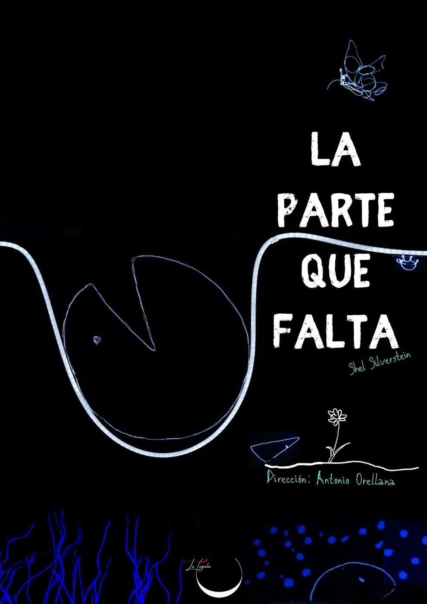

Festival Harionetas · Haría
Estreno · Sala El Aljibe
Ficha del festival ↗
Proyecto educativo · 4 funciones de campaña escolar.
Cabildo de Lanzarote ↗
Jesús Alves Reguera · Antonio Orellana
Agustín Salvago · J. Carlos Sánchez · Antonella Siano · Fefa Toledo
Marionetas · José Antonio Reguera
Atrezzo/escenografía · Nadezhda Neyra Cano
Música · Alba Rapela · IA generation
Sonidos “Lanzarote” · Antonio Orellana
Costura · Mª Antonia Landa
Diseño gráfico · Daniel García
Fotografía · Felipe de la Cruz
· LA TEGALA ESCÉNICA
· ANTONIO ORELLANA
Con motivo de La Parte Que Falta en El Almacén.